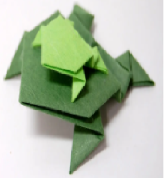
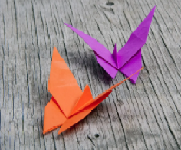

Camel
- Camels ears are furry.
- Camels can move easily around the sand because of its specially designed feet.
- when they find water,they will drink as much as possible.

Chameleon
- Chameleon are reptiles part of iguana suborder.
- changing skin color is an important part of comunication among chameleons.
- Most chameleon have a prehensile tail that they use to wrap around tree branches.

Pigeons
- Pigeons are incredibly intelligent and complex animals.
- Pigeons are renowned for their outstanding navigational abilities.
- Pigeons have exellent hearing abilities.

Panda
- Pandas have great camouflage for their enviroment .
- Pandas pend lot of their day eating ,Bamboo is critical to their diet.
- Pandas eyes are different to normal bears.

Cicada
- Cicada live on all continents except Antartica.
- Cicada have one of the longest insect lifespan .
- Cicada spend modt of their life underground.

Teddy
- The name of teddy bear comes from United State President Theodore Roosevelt.
- The first toy Teddy bear was created by German toymaker Margarete Steiff.
- The world's smallest stitched teddy bear is a mere 0.29 inches tall and The world's largest stitched teddy bear is The 55-foot tall.

Frog
- There are over 5,000 species of frog in whole world.
- Some frog can jump over 20 times their own body lenth.
- Frogs have an exellent night vision.

Butterfly
- Butterfly wings are transparent.
- There are almost 20,000 butterfly species in whole world.
- Butterflies use their feet to taste.
Crane
- It stands 158 centimeters (5 feet) tall, has a wingspan of up to 2.5 meters (8 feet).
- They weigh from 7 to 15 kilograms, (15 to 26 pounds).
- Red-crowned cranes are highly aquatic cranes with large home ranges in southeastern Russia, northeast China, Mongolia and eastern Japan.

T-rex
- The Tyrannosaurus had a life span of around 30 years.
- Tyrannosaurus is from the Greek word meaning Tyrant Lizard.
- It could probably eat as much as 226 kg of meat in a single bite.